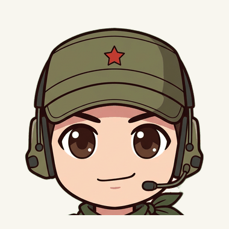
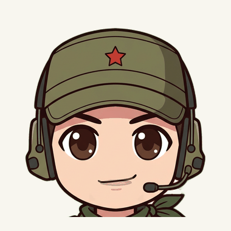

FACE STORYBOARD / 02
Раскадровка глаз и рта.
Живой блендинг той же математики, что внутри .moc3 — двигайте параметры как в VTube Studio.
LIVE Липсинк · ParamMouthOpenY + ParamMouthForm
Кадры открываются одной цепочкой закрыт → слегка → полуоткрыт → «А»; одновременно смешано не более двух соседних — поэтому переходы плавные, без «двойного рта».
LIVE Моргание · ParamEyeLOpen/R + ParamEyeSmileL/R
Моргание в VTube Studio — быстрый проход 1 → 0 → 1 (~0.15 с); глаза проходят кадры нейтраль → полуприкрыт → закрыт и обратно. Улыбка заменяет открытый глаз «аркой».
Липсинк 0→1→0 + улыбка/ухмылка
ParamMouthForm.Цикл моргания

ParamEyeLOpen/R 1 → 0 → 1 по нарисованным векам.Улыбка ↔ ухмылка

ParamMouthForm −1…+1; глаза подхватывают улыбку (физика модели).Шкала рта · ParamMouthOpenY
Шкала глаз · ParamEyeLOpen/R
Файлы пакета
📄 storyboard_boards.pdf
📄 storyboard.csv
📄 manifest.json
📄 face_storyboard.psd
📄 mouth_sprite_sheet.png
📄 eyes_sprite_sheet.png
📄 README.md
⭐ Готовая модель VTube Studio